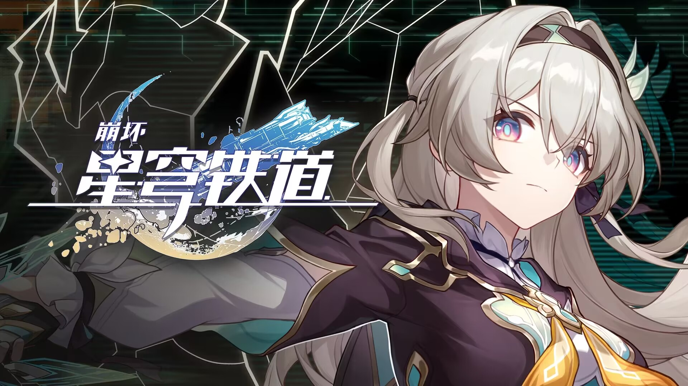
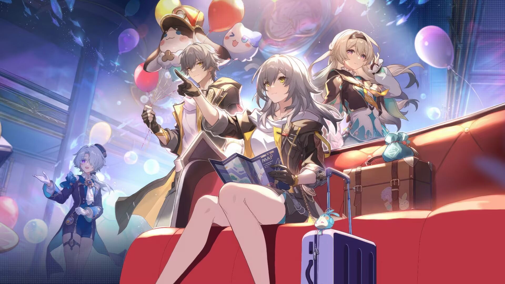
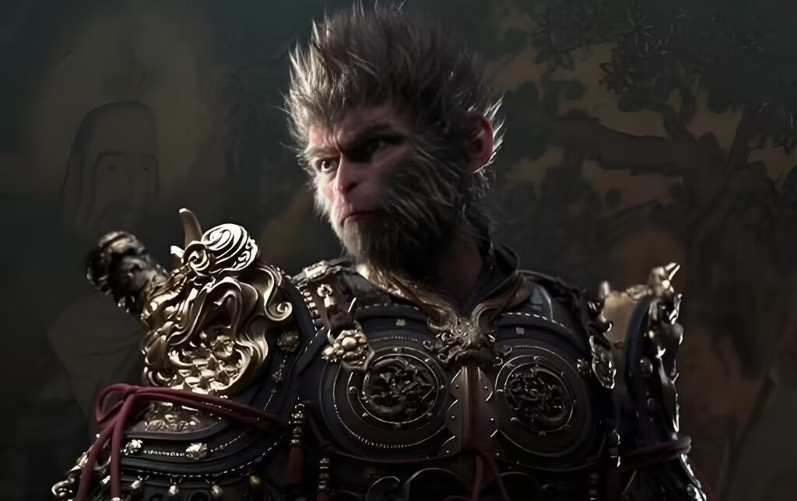
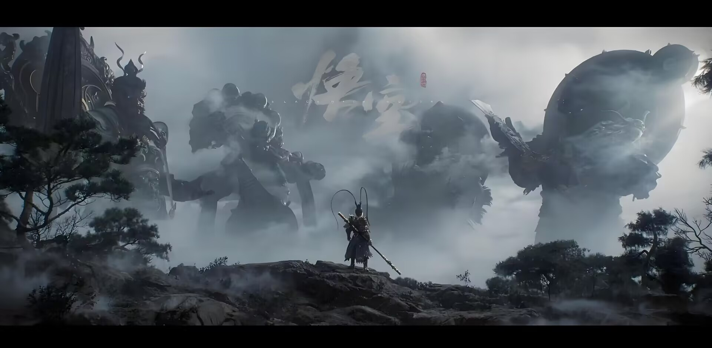
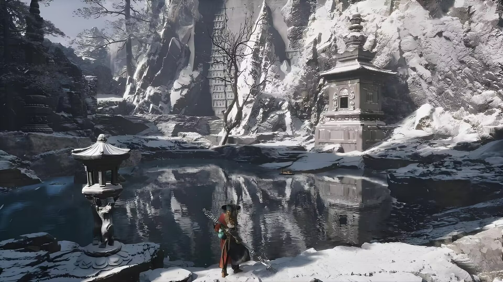
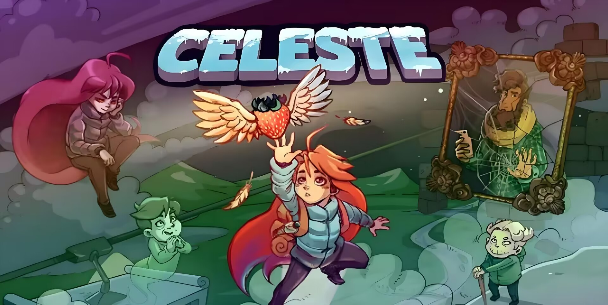
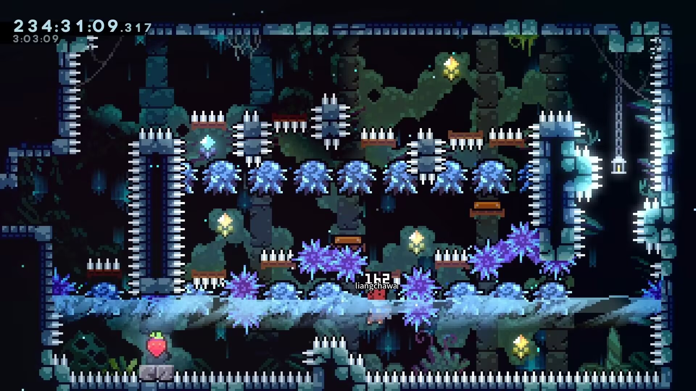
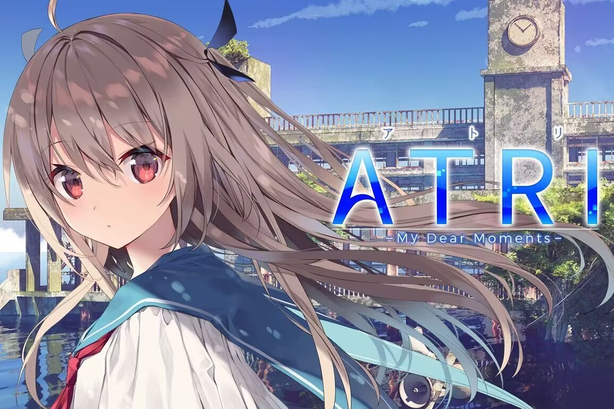
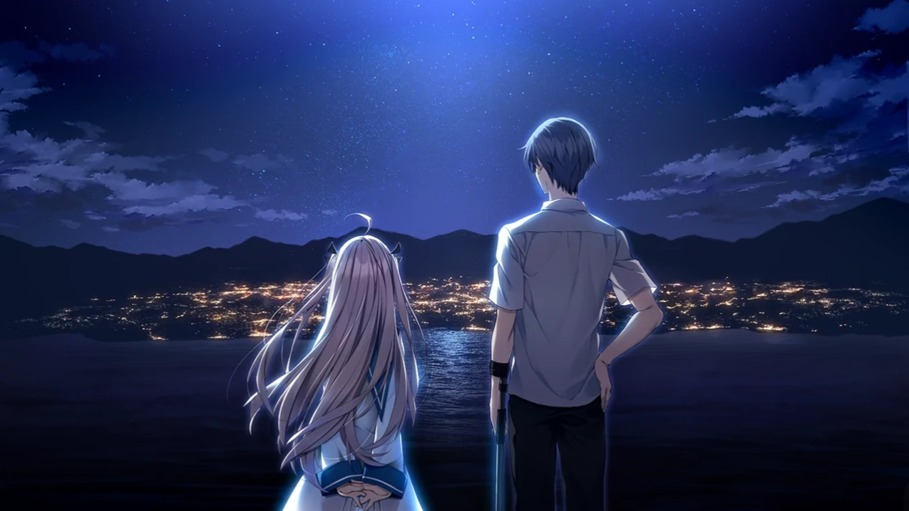

星穹铁道
这是一款箱庭式rpg游戏，游戏以宇宙为背景，玩家将穿越星际，乘坐名为“星穹列车“，探索神秘的星球和未知的文明。玩家在游戏中扮演“乘客”角色，与各具特色的伙伴们共同经历冒险，逐步揭开一个个宇宙间的秘密与谜团。
显然，剧情是这个游戏的核心亮点。在宇宙尺度的世界观下，有着不同的派系，不同的信仰，观念的不同分化出一个个命途，行走在命途上的人们被称为命途行者。宇宙的浩瀚使得剧情得以从很高的维度不断展开。譬如皮诺康尼篇，将7个势力卷入一场事件中，堪称视觉盛宴。剧情一般有两个走向。主线会更加严肃，时间线更长，主题更深刻。活动剧情往往加入大量的梗，让玩家在整活和抽象中会心一笑。

作为二次元游戏，其中包括很多性格迥异的角色，玩家在剧情推进中会逐步了解他们，仿佛真的置身另一个世界一般。当然，人物的外观设计，特效的华丽制作，风景的精心搭建，建筑的风格各异都是游戏风靡一时的原因。游戏的画面风格非常精致，结合了科技感十足的未来元素与奇幻的自然景观，打造出了一个视觉震撼的宇宙。无论是外太空的浩瀚星空，还是各具特色的星球景观，都给人以强烈的代入感。此外，游戏的配乐也十分出色，结合了宇宙冒险的氛围，增强了游戏的沉浸感。

游戏采用了经典的回合制战斗系统，玩家将指挥自己的队伍与敌人进行战斗。每个角色拥有不同的技能和属性，玩家需要根据敌人的弱点来选择最适合的战术进行应对。此外，角色间的协同作战也是游戏的一大亮点，合理的队伍搭配能让战斗更具策略性。
黑神话悟空
这是一款动作角色扮演游戏，同时也是中国第一部3A大作。它基于中国古代经典小说《西游记》中的故事和人物打造，特别是围绕孙悟空这一角色展开。游戏的开发团队致力于将传统的中国文化与现代游戏技术相结合，创造出一款具有深刻文化内涵和出色游戏体验的作品。在这里玩家将控制孙悟空，通过游戏的世界探索和战斗来揭开更深层次的秘密和挑战。
游戏的战斗系统非常注重动作感和策略性，孙悟空的技能和变化多端，玩家不仅可以使用如“七十二变”这样的神通，还能够在战斗中使用变身、分身等技能来应对不同的敌人。此外，孙悟空的武器——如金箍棒，也将成为战斗的核心元素。击败各种各样的boss，便是游戏的挑战之一。
游戏画面的质量和细节处理非常精致，自然风光的复现堪称一流，展现了中国神话中的神仙、妖魔、灵兽等生动的场景。特别是在孙悟空与敌人的战斗中，游戏的光影效果、打击感和动作流畅性都给玩家带来了非常震撼的体验。
游戏在继承经典中国神话文化的同时，做出了许多创新，赋予了经典人物和神话世界新的解读，带给玩家耳目一新的感觉。例如，孙悟空的个性更加复杂和立体，故事情节也不再是简单的英雄史诗，而是充满了成长与探索。
Celeste
《Celeste》是一款高难度的平台跳跃游戏，玩家需要帮助马德琳在复杂的关卡中跳跃、爬升、闪避障碍物。游戏的设计非常考验玩家的反应速度、精确度和耐性。每个关卡都有独特的设计和机制，有时需要利用特殊的技能如冲刺和跳跃，来解决难题并突破关卡中的障碍。尽管难度较高，但游戏的关卡设计精巧，提供了足够的提示和帮助，允许玩家反复挑战并逐渐提高技巧。
《Celeste》的精神内核深刻而富有哲理，它以马德琳攀登山峰的故事为载体，探讨了心理健康、焦虑、抑郁、自我怀疑以及如何面对并克服这些内心困扰的主题。它传达了一种勇气和决心的力量，鼓励玩家在面对困难和挑战时不放弃，而是一步步迈向目标。游戏通过巧妙的关卡设计和深情的故事线，强调了“失败是成功的前提”，并且每一次失败都蕴含着成长的机会。
Atri:My Dearest Time
《Atri: My Dearest Time》是一款标准的视觉小说，玩家通过点击文本来推进剧情。游戏的核心玩法依赖于玩家的选择，某些决策将影响到与Atri以及其他角色的互动，并最终决定游戏的结局。游戏采用了分支剧情的设计，玩家的选择将引导不同的情节发展和结局。视觉小说的每个章节都有丰富的文字叙事和对话，玩家可以通过这些元素加深对角色的理解。与Atri的互动不仅局限于简单的对话，还涉及到感情的升华和对未来的选择，玩家将面对一些情感和伦理方面的难题。游戏还通过精美的插图和音乐来增强情感的表现，使玩家沉浸在故事的氛围中。
游戏深入探讨了人工智能与人类情感的复杂关系，特别是在孤独和绝望的背景下，如何在人与人工智能之间找到一种平衡。Atri这个角色的设计非常有深度，她不仅仅是一个工具，而是一个有思想、感情的存在，与主人公之间的情感纽带不断深化。剧情充满了温情与感动，充满了对生命、时间和存在意义的思考。游戏的叙事结构层层推进，触动人心的故事情节让玩家在情感上产生共鸣。
游戏的结局是由玩家的选择决定的，这些选择不仅仅影响角色间的关系，还关乎剧情的走向和最终的情感收尾。玩家可以通过不同的选择体验多种结局，从而更加深入地理解角色的心境和故事的主题。
